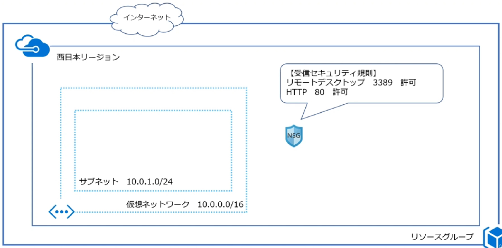
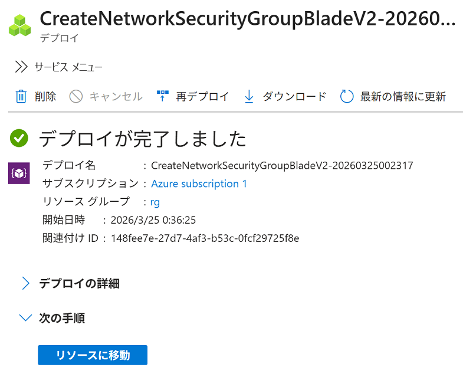
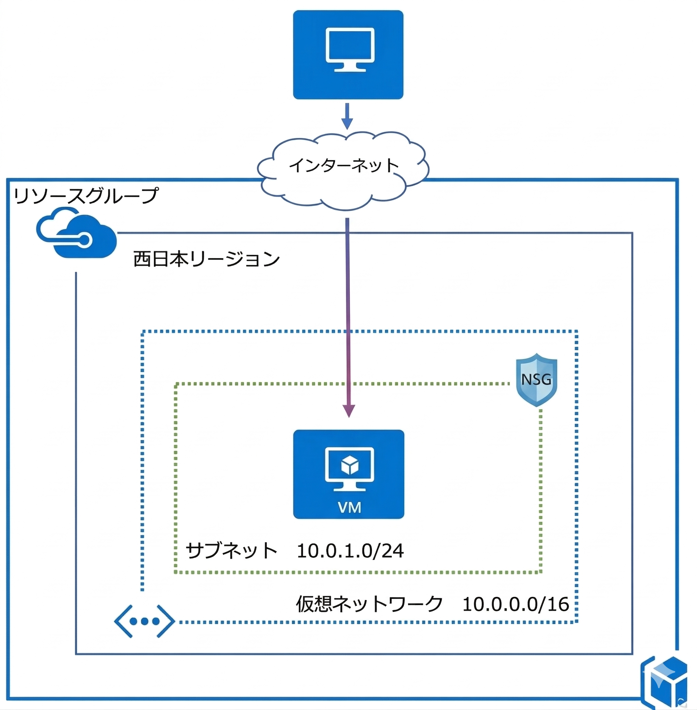
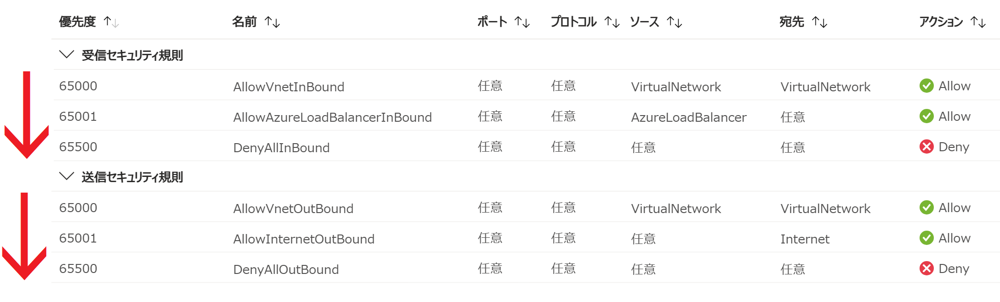
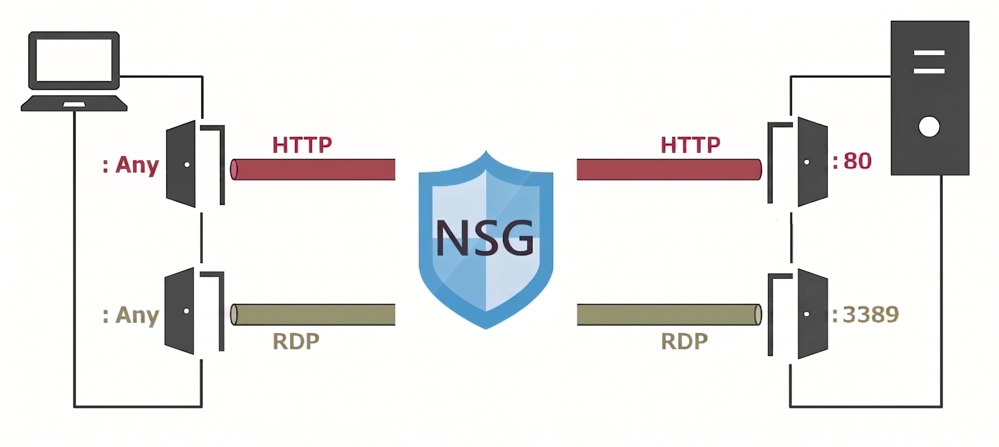
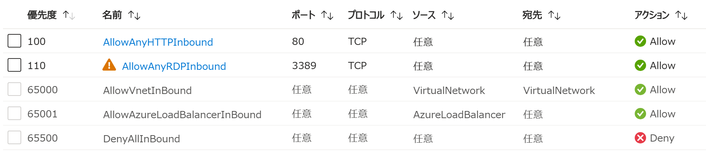
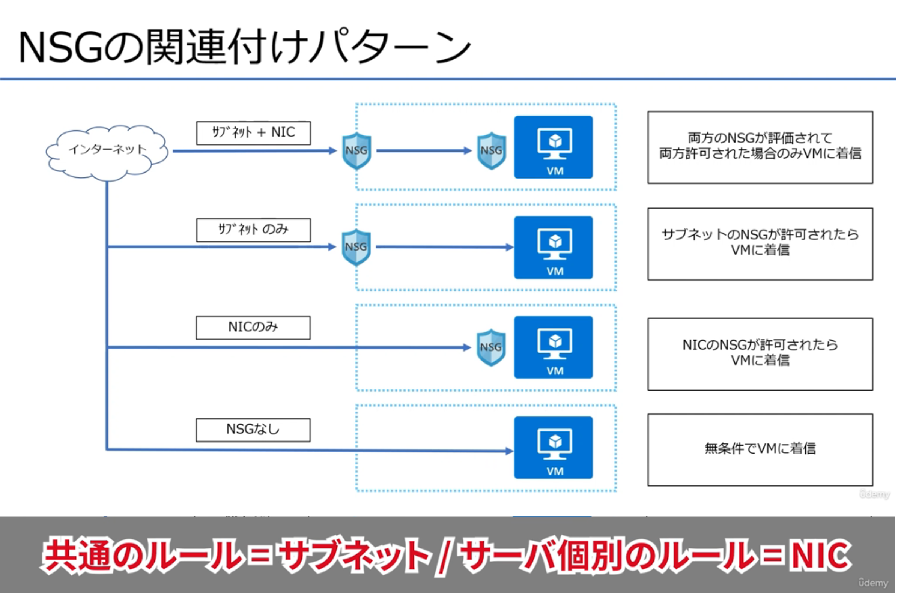
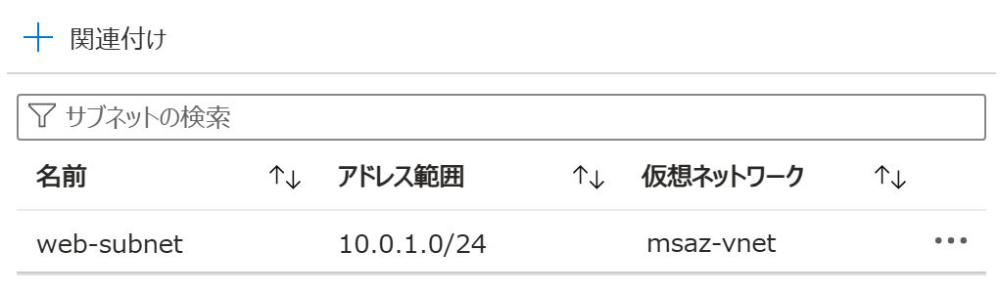

Azure ポータル で ネットワークセキュリティグループ を作成する
適用対象: ✔️ ネットワーク セキュリティ グループ
この演習では、Azure ポータル を使用して ネットワーク セキュリティ グループ（NSG） を作成します。
所要時間: 約 15 分
先行の演習
この演習を始める前に 仮想ネットワークを作成する を完了してください。
ネットワークセキュリティグループ（NSG）
NSGは、Azure 上の通信を「通してよいか、止めるか」を決めるための規則（ルール）の集まりです。
NSGは 受信セキュリティ規則 と 送信セキュリティ規則 で構成されています。

タスク 1: ネットワークセキュリティグループ（NSG）の作成
NSG を作成します。NSG のルールを有効にするには、サブネット / ネットワーク インターフェイス (NIC) に関連付ける必要があります。

- 上部の検索ボックスに
nsgと入力します。 - [ネットワーク セキュリティ グループ] を選択します。
- [＋ 作成] を選択します。
- 使用する サブスクリプション を選択します。
- リソース グループで [msaz-rg] を選択します。
- 名前に
msaz-nsgと入力します。 - 利用可能な リージョン を選択します。
- [確認および作成] を選択します。
- 内容を一通り確認し、 [作成] を選択します。
- 完了を待ちます。

タスク 2: セキュリティ規則の追加
受信セキュリティ規則（ルール）を追加します。下記を許可します。
- Azureの仮想マシンにブラウザで接続する（Webページを表示するため）
- Azureの仮想マシンにリモートデスクトップで接続する（仮想マシンを設定するため）

- 上部の検索ボックスに
nsgと入力します。 - [ネットワーク セキュリティ グループ] を選択します。
msaz-nsgを選択します。- デフォルトの 受信セキュリティ規則 と 送信セキュリティ規則 を確認します。
セキュリティ規則は、優先度の小さいものから順に評価されます。どれか 1 つのセキュリティ規則で許可または拒否された時点で評価は終了します。 受信/送信ともに、最後には❌ Deny（拒否のセキュリティ規則）があり、それまでの規則で許可も拒否もされなかった通信は拒否されます。
- サービスメニューから 設定 ＞ [受信セキュリティ規則] を選択します。
- [＋ 追加] を選択します。
- 受信セキュリティ規則の追加 で 下の表の HTTPの設定 を入力または確認します。
- [追加] を選択します。
- 完了を待ちます。
- [＋ 追加] を選択します。
- 受信セキュリティ規則の追加 で 下の表の RDPの設定 を入力または確認します。
- [追加] を選択します。
- 完了を待ちます。
HTTPの設定
| 設定 | 値 |
|---|---|
| ソース | [Any] |
| ソースポート範囲 | * |
| 宛先 | [Any] |
| サービス | [HTTP] |
| 宛先ポート範囲 | 80 |
| プロトコル | [TCP] |
| アクション | [許可] |
| 優先度 | 100 |
| 名前 | AllowAnyHTTPInbound |
| 説明 | すべての送信元からのHTTPインバウンド通信を許可する |
RDPの設定
| 設定 | 値 |
|---|---|
| ソース | [Any] |
| ソースポート範囲 | * |
| 宛先 | [Any] |
| サービス | [RDP] |
| 宛先ポート範囲 | 3389 |
| プロトコル | [TCP] |
| アクション | [許可] |
| 優先度 | 110 |
| 名前 | AllowAnyRDPInbound |
| 説明 | すべての送信元からのRDPインバウンド通信を許可する |

タスク 3: 作成されたリソースの確認
受信セキュリティ規則（ルール）が追加されていることを確認します。
- 上部の検索ボックスに
nsgと入力します。 - [ネットワーク セキュリティ グループ] を選択します。
msaz-nsgを選択します。- 受信セキュリティ規則 を確認します。
ポート80(HTTP) と ポート3389(RDP) が アクション✅ Allowであることを確認します。
タスク 4: ネットワークセキュリティグループ（NSG）を リソースに関連付けする
NSGをリソースに関連付けします。
セキュリティ規則（ルール）を適用するには関連付けが必要です。
NSGの関連付けは ネットワーク設計に応じていくつかのパターンに分類できます。

ここでは 作成したNSGを サブネットに 関連付けします。
NSGのセキュリティ規則（ルール）が サブネットに共通の規則（ルール）として適用されます。
- 上部の検索ボックスに
nsgと入力します。 - [ネットワーク セキュリティ グループ] を選択します。
msaz-nsgを選択します。- サービスメニューから 設定 ＞ [サブネット] を選択します。
- [＋ 関連付け] を選択します。
- サブネットの関連付け で 以下の設定値を入力または確認します。指定のない項目はデフォルトのままにします。
設定 値 仮想ネットワーク [msaz-vnet (msaz-rg)] サブネット [web-subnet] - [OK] を選択します。
- 完了を待ちます。
